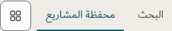
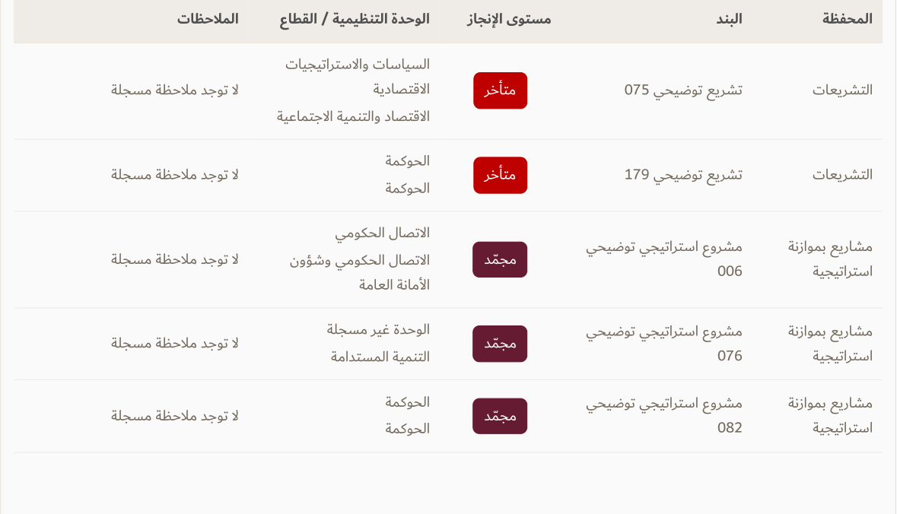
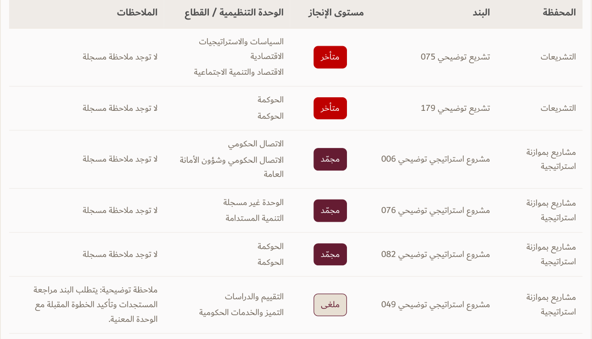

Before · v130

Requested app changes and before/after comparisons ·11 October 2026
Native app captures at 100% zoom. Report data is illustrative. Bar calculations/colors retain their existing meaning; compact partial-data wording is proposed separately.
All information tables and rulesBefore monthly PDFAfter monthly PDFBar definitions/source audit
Before · v130
After · v131

Before · v130
After · v131
Other destinations remain in the menu.
Before · v130
After · v131
Other destinations remain in the menu.
Before · v130
After · v131

Other destinations remain in the menu.
Before · v130

After · v131

Column headings stay Dubai Bold 13.5pt. Same native PDF scale; same source records and row padding.
| Role | Example | Size | Font |
|---|---|---|---|
| Portfolio heading | محفظة المشاريع | 30px | DIN Next Arabic Regular |
| Card title | الأجندة السنوية | 28px | DIN Next Arabic Regular |
| Total figure | 117 / 62 | 40px | DIN Next LT Arabic Regular |
| Agenda status figure | 43 / 16 / 58 | 34px | DIN Next LT Arabic Regular |
| Special-project figure / agenda type total | 24 / 36 / 12 / 100 / 17 | 28px | DIN Next LT Arabic Regular |
| Subgroup name | للقيادة / للأمانة العامة | 16px | Dubai Regular |
| Metric label / bar caption | منجز / قيد العمل / نسبة المنجز | 12px | Dubai Regular |
| Change arrow and difference | ↑ +3 | 15px | Dubai Regular |
| Meaningful note | جهة الطلب غير مسجلة… | 14px | Dubai Regular |
Illustrative specimens; colors and formulas are taken from the app.
12 منجزاً من 24 مشروعاً
Completed ÷ subgroup totalFinancial ratios retain their budget denominator.
Diagonal hatching marks a subtotal based on incomplete source values. Its length shows the money subtotal; 59/61 shows source-value coverage.
Before · current wording
قيم متاحة: 59 من 61
After · proposed wording
تُجمع 59 قيمة مالية من 61 مشروعاً؛ قيمتان غير متاحتين ولا تُحتسبان صفراً.
Print: 59 من 61؛ قيمتان غير متاحتين.
Pattern specimen only;72% length illustrates the style, not an operational subtotal. Complete rows need no repeated availability note. This note change is a proposal; the app’s financial warnings remain.